토목산업기사 (2019-09-21 기출문제)
1과목: 응용역학
1. 그림과 같은 3힌지 아치의 수평반력 HA는?
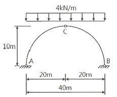
- 60 kN
- 80 kN
- 100 kN
- 120 kN
(정답률: 78%)

2. 그림과 같이 지름이 d인 원형 단면의 B-B축에 대한 단면 2차 모멘트는?
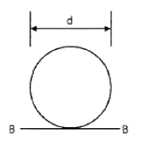
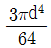
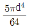
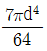
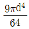
(정답률: 64%)
3. 다음 값 중 경우에 따라서는 부(-)의 값을 갖기도 하는 것은?
- 단면계수
- 단면 2차 반지름
- 단면 2차 극모멘트
- 단면 2차 상승모멘트
(정답률: 60%)
4. 그림과 같은 단순보에 발생하는 최대 처짐은?
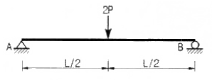
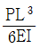
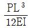
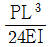
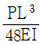
(정답률: 60%)
5. 그림과 같은 단순보에서 B점의 수직반력 RB가 50kN까지의 힘을 받을 수 있다면 하중 80kN은 A점에서 몇 m까지 이동할 수 있는가?
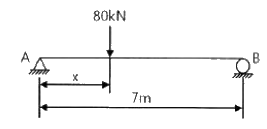
- 2.823m
- 3.375m
- 3.823m
- 4.375m
(정답률: 62%)
6. 지점 A에서의 수직반력의 크기는?
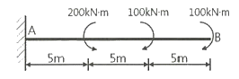
- 0 kN
- 5 kN
- 10 kN
- 20 kN
(정답률: 70%)
7. 그림과 같이 세 개의 평행력이 작용하고 있을 때 A점으로부터 합력(R)의 위치까지의 거리 x는 얼마인가?
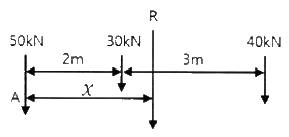
- 2.17m
- 2.86m
- 3.24m
- 3.96m
(정답률: 58%)
8. 그림과 같은 원형 단면의 단순보가 중앙에 200kN 하중을 받을 때 최대 전단력에 의한 최대 전단응력은? (단, 보의 자중은 무시한다.)
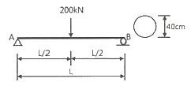
- 1.06 MPa
- 1.19 MPa
- 4.25 MPa
- 4.78 MPa
(정답률: 49%)
9. 그림에서 두 힘(P1 = 50kN, P2 = 40kN)에 대한 합력(R)의 크기와 방향(θ) 값은?
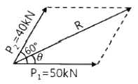
- R = 78.10 kN, θ = 26.3°
- R = 78.10 kN, θ = 28.5°
- R = 86.97 kN, θ = 26.3°
- R = 86.97 kN, θ = 28.5°
(정답률: 51%)
10. 그림과 같은 양단고정인 기둥의 이론적인 유효세장비(λe)는 약 얼마인가?
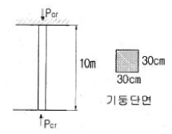
- 38
- 48
- 58
- 68
(정답률: 52%)
11. 그림과 같이 단순보의 양단에 모멘트 하중 M이 작용할 경우, 이 보의 최대 처짐은? (단, EI는 일정하다.)
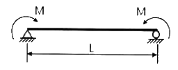
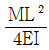
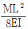
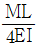
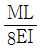
(정답률: 51%)
12. 트러스(Truss)를 해석하기 위한 가정 중 틀린 것은?
- 모든 하중은 절점에만 작용한다.
- 작용하중에 의한 트러스의 변형은 무시한다.
- 부재들은 마찰이 없는 힌지로 연결되어 있다.
- 각 부재는 직선재이며, 절점의 중심을 연결하는 직선은 부재축과 일치하지 않는다.
(정답률: 57%)
13. 그림과 같은 음영 부분의 단면적이 A인 단면에서 도심 y를 구한 값은?
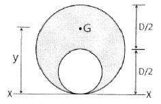
- 5D/12
- 6D/12
- 7D/12
- 8D/12
(정답률: 59%)
14. 균질한 균일 단면봉이 그림과 같이 P1, P2, P3의 하중을 B, C, D점에서 받고 있다. 각 구간의 거리 a=1.0m, b=0.4m, c=0.6m이고 P2=100kN, P3=50kN의 하중이 작용할 때 D점에서의 수직방향 변위가 일어나지 않기 위한 하중 P1은 얼마인가?
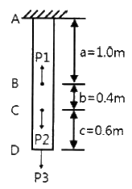
- 240 kN
- 200 kN
- 160 kN
- 130 kN
(정답률: 50%)
15. 지지조건이 양단힌지인 장주의 좌굴하중이 1000kN인 경우 지점조건이 일단힌지, 타단고정으로 변경되면 이때의 좌굴하중은? (단, 재료성질 및 기하학적 형상은 동일하다.)
- 500 kN
- 1000 kN
- 2000 kN
- 4000 kN
(정답률: 53%)
16. 어떤 재료의 탄성계수가 E, 푸아송 비가 ν일 때 이 재료의 전단 탄성계수(G)는?
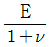
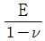
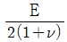
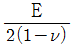
(정답률: 71%)
17. 외력을 받으면 구조물의 일부나 전체의 위치가 이동될 수 있는 상태를 무엇이라 하는가?
- 안정
- 불안정
- 정정
- 부정정
(정답률: 71%)
18. 직사각형 단면의 최대 전단응력은 평균 전단응력의 몇 배인가?
- 1.5
- 2.0
- 2.5
- 3.0
(정답률: 61%)
19. 경간(L)이 10m인 단순보에 그림과 같은 방향으로 이동하중이 작용할 때 절대 최대 휨모멘트는? (단, 보의 자중은 무시한다.)
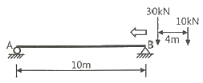
- 45 kN‧m
- 52 kN‧m
- 68 kN‧m
- 81 kN‧m
(정답률: 50%)
20. 전단력을 S, 단면 2차 모멘트를 I, 단면 1차 모멘트를 Q, 단면의 폭을 b라 할 때 전단응력도의 크기를 나타낸 식으로 옳은 것은? (단, 단면의 형상은 직사각형이다.)
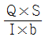
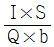
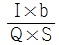
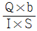
(정답률: 68%)
2과목: 측량학
21. 삼각형 표석에서 반석과 주석에 관한 내용 중 틀린 것은?
- 반석과 주석의 재질은 주로 금속을 이용한다.
- 반석과 주석의 십자선 중심은 동일 연직선 상에 있다.
- 반석과 주석의 설치를 위해 인조점을 설치한다.
- 반석과 주석의 두부상면은 서로 수평이 되도록 설치한다.
(정답률: 64%)
22. 수준측량에서 전시와 후시의 시준거리를 같게 하여 소거할 수 있는 오차는?
- 표척의 눈금읽기 오차
- 표척의 침하에 의한 오차
- 표척의 눈금 조정 부정확에 의한 오차
- 시준선과 기포관 축이 평행하지 않기 때문에 발생되는 오차
(정답률: 64%)
23. 다음 조건에 따른 C점의 높이 최확값은?
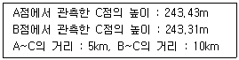
- 243.35m
- 243.37m
- 243.39m
- 243.41m
(정답률: 54%)
24. 축적 1:1000에서의 면적을 측정하였더니 도상면적이 3cm2 이었다. 그런데 이 도면 전체가 가로, 세로 모두 1%씩 수축되어 있었다면 실제면적은?
- 29.4 m2
- 30.6 m2
- 294 m2
- 306 m2
(정답률: 50%)
25. 편각법에 의하여 원곡선을 설치하고자 한다. 곡선 반지름이 500m, 시단현이 12.3m일 때 시단현의 편각은?
- 36′, 27″
- 39′, 42″
- 42′, 17″
- 43′, 43″
(정답률: 52%)
26. 하천의 평균유속을 구할 때 횡단면의 연직선 내에서 일점법으로 가장 적합한 관측 위치는?
- 수면에서 수심의 2/10 되는 곳
- 수면에서 수심의 4/10 되는 곳
- 수면에서 수심의 6/10 되는 곳
- 수면에서 수심의 8/10 되는 곳
(정답률: 66%)
27. 지형도를 작성할 때 지형 표현을 위한 원칙과 거리가 먼 것은?
- 기복을 알기 쉽게 할 것
- 표현을 간결하게 할 것
- 정량적 계획을 엄밀하게 할 것
- 기호 및 도식은 많이 넣어 세밀하게 할 것
(정답률: 70%)
28. 그림의 등고선에서 AB의 수평거리가 40m일 때 AB의 기울기는?
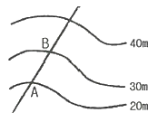
- 10%
- 20%
- 25%
- 30%
(정답률: 59%)
29. 지구전체를 경도를 6°씩 60개로 나누고, 위도는 8°씩 20개(남위 80° ~ 북위 84°)로 나누어 나타내는 좌표계는?
- UPS 좌표계
- UTM 좌표계
- 평면직각 좌표계
- WGS 84 좌표계
(정답률: 60%)
30. 그림과 같은 도로의 횡단면도에서 AB의 수평거리는?
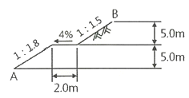
- 8.1m
- 12.3m
- 14.3m
- 18.5m
(정답률: 53%)
31. 어느 지역의 측량 결과가 그림과 같다면 이 지역의 전체 토량은? (단, 각 구역의 크기는 같다.)
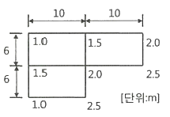
- 200 m3
- 253 m3
- 315 m3
- 353 m3
(정답률: 63%)
32. 표고 100m인 촬영기준면을 초점거리 150mm 카메라로 사진축척 1:20000의 사진을 얻기 위한 촬영비행고도는?
- 1333m
- 2900m
- 3000m
- 3100m
(정답률: 45%)
33. 위성의 배치상태에 따른 GNSS의 오차 중 단독측위(독립측위)와 관련이 없는 것은?
- GDOP
- RDOP
- PDOP
- TDOP
(정답률: 51%)
34. 매개변수 A=100m인 클로소이드 곡선길이 L=50m에 대한 반지름은?
- 20m
- 150m
- 200m
- 500m
(정답률: 57%)
35. 수준측량에서 도로의 종단측량과 같이 중간시가 많은 경우에 현장에서 주로 사용하는 야장기입법은?
- 기고식
- 고차식
- 승강식
- 회귀식
(정답률: 68%)
36. 측량지역의 대소에 의한 측량의 분류에 있어서 지구의 곡률로부터 거리오차에 따른 정확도를 1/107까지 허용한다면 반지름 몇 km 이내를 평면으로 간주하여 측량할 수 있는가? (단, 지구의 곡률반지름은 6372km이다.)
- 3.49km
- 6.98km
- 11.03km
- 22.07km
(정답률: 28%)
37. 그림과 같은 관측값을 보정한 ∠AOC는?
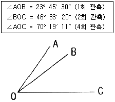
- 70° 19′ 08″
- 70° 19′ 10″
- 70° 19′ 11″
- 70° 19′ 18″
(정답률: 46%)
38. 산지에서 동일한 각관측의 정확도로 폐합트래버스를 관측한 결과, 관측점수(n)가 11개, 각관측 오차가 1′ 15″ 이었다면 오차의 배분 방법으로 옳은 것은? (단, 산지의 오차한계는 ±90″ √n을 적용한다.)
- 오차가 오차한계보다 크므로 재관측하여야 한다.
- 각의 크기에 상관없이 등분하여 배분한다.
- 각의 크기에 반비례하여 배분한다.
- 각의 크기에 비례하여 배분한다.
(정답률: 49%)
39.
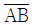
측선의 방위각이 50° 30′이고 그림과 같이 각 관측을 실시하였다.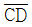
측선의 방위각은?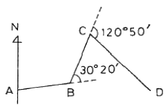
- 139° 00′
- 141° 00′
- 151° 40′
- 201° 40′
(정답률: 56%)
40. 종단 및 횡단측량에 대한 설명으로 옳은 것은?
- 종단도의 종축척과 횡축척은 일반적으로 같게 한다.
- 노선의 경사도 형태를 알려면 종단도를 보면 된다.
- 횡단측량은 종단측량보다 높은 정확도가 요구된다.
- 노선의 횡단측량을 종단측량보다 먼저 실시하여 횡단도를 작성한다.
(정답률: 58%)
3과목: 수리학
41. 지하수의 유수 이동에 적용되는 Darcy의 법칙은? (단, v : 유속, k : 투수계수, I : 동수경사, h : 수심, R : 동수반경, C : 유속계수)
- v = =kI
- v = -kh
- v = -kCI
- v = C √RI
(정답률: 56%)
42. 반지름 1.5m의 강관에 압력수두 100m의 물이 흐른다. 강재의 허용응력이 147MPa일 때 강관의 최소 두께는?
- 0.5cm
- 0.8cm
- 1.0cm
- 10cm
(정답률: 37%)
43. 관수로 내의 흐름을 지배하는 주된 힘은?
- 인력
- 중력
- 자기력
- 점성력
(정답률: 65%)
44. 에너지선에 대한 설명으로 옳은 것은?
- 유체의 흐름방향을 결정한다.
- 이상유체 흐름에서는 수평기준면과 평행하다.
- 유량이 일정한 흐름에서는 동수경사선과 평행하다.
- 유선 상의 각 점에서의 압력수두와 위치수두의 합을 연결한 선이다.
(정답률: 43%)
45. 위어(weir) 중에서 수두변화에 따른 유량 변화가 가장 예민하여 유량이 적은 실험용 소규모 수로에 주로 사용하며, 비교적 정확한 유량측정이 필요할 경우 사용하는 것은?
- 원형 위어
- 삼각 위어
- 사다리꼴 위어
- 직사각형 위어
(정답률: 54%)
46. 그림과 같이 단면적이 200cm2인 90° 굽어진 관(1/4 원의 형태)을 따라 유량 Q = 0.⑤ m3/s 의 물이 흐르고 있다. 이 굽어진 면에 작용하는 힘(P)은?
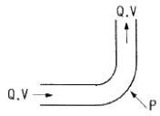
- 157 N
- 177 N
- 1570 N
- 1770 N
(정답률: 46%)
47. 지름 0.3cm의 작은 물방울에 표면장력 T15 = 0.00075 N/cm가 작용할 때 물방울 내부와 외부의 압력차는?
- 30Pa
- 50Pa
- 80Pa
- 100Pa
(정답률: 38%)
48. 정수(靜水) 중의 한 점에 작용하는 정수압의 크기가 방향에 관계없이 일정한 이유로 옳은 것은?
- 물의 단위중량이 9.81 kN/m3 으로 일정하기 때문이다.
- 정수면은 수평이고 표면장력이 작용하기 때문이다.
- 수심이 일정하여 정수압의 크기가 수심에 반비례하기 때문이다.
- 정수압은 면에 수직으로 작용하고, 정역학적 평형방정식에 의해 모든 방향에서 크기가 같기 때문이다.
(정답률: 55%)
49. 개수로에서 도수로 인한 에너지 손실을 구하는 식으로 옳은 것은? (단, h1 : 도수 전의 수심, h2 : 도수 후의 수심)
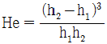
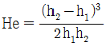
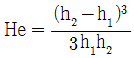
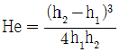
(정답률: 41%)
50. 그림과 같이 단면 ①에서 관의 지름이 0.5m, 유속이 2m/s이고, 단면 ②에서 관의 지름이 0.2m일 때 단면 ②에서의 유속은?
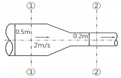
- 10.5m/s
- 11.5m/s
- 12.5m/s
- 13.5m/s
(정답률: 50%)
51. 흐름 중 상류(常流)에 대한 수식으로 옳지 않은 것은? (단, Hc : 한계수심, Ic : 한계경사, Vc : 한계유속, H : 수심, I : 수로경사, V : 유속)
- Hc ＜ H
- Ic ＞ I
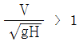
- Vc ＞ V
(정답률: 53%)
52. 10m 깊이의 해수 중에서 작업하는 잠수부가 받는 계기압력은? (단, 해수의 비중은 1.025)
- 약 1기압
- 약 2기압
- 약 3기압
- 약 4기압
(정답률: 52%)
53. Darcy의 법칙을 지하수에 적용시킬 수 있는 경우는?
- 난류인 경우
- 사류인 경우
- 상류인 경우
- 층류인 경우
(정답률: 59%)
54. 수축계수 0.45, 유속계수 0.92인 오리피스의 유량 계수는?
- 0.414
- 0.489
- 0.643
- 2.044
(정답률: 44%)
55. 유체의 점성(viscosity)에 대한 설명으로 옳은 것은?
- 유체의 비중을 알 수 있는 척도이다.
- 동점성계수는 점성계수에 밀도를 곱한 값이다.
- 액체의 경우 온도가 상승하면 점성도 함께 커진다.
- 점성계수는 전단응력(τ)을 속도 경사(
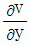
)로 나눈 값이다.
(정답률: 48%)
56. 그림과 같이 지름 3m, 길이 8m인 수문에 작용하는 수평분력의 작용점까지 수심(hc)은?
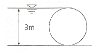
- 2.00m
- 2.12m
- 2.34m
- 2.43m
(정답률: 52%)
57. 사다리꼴 단면인 개수로에서 수리학적으로 가장 유리한 단면의 조건은? (단, R : 경심, B : 수면 폭, h : 수심)
- B = h/2
- B = h
- R = h/2
- R = h
(정답률: 57%)
58. 관수로의 관망설계에서 각 분기점 또는 합류점에 유입하는 유량은 그 점에서 정지하지 않고 전부 유출하는 것으로 가정하여 관망을 해석하는 방법은?
- Manning 방법
- Hardy – Cross 방법
- Darcy – Weisbach 방법
- Ganguillet – Kutter 방법
(정답률: 59%)
59. 개수로에서 파상도수가 일어나는 범위는? (단, Fr1 : 도수 전의 Froude number)
- Fr1 = √3
- 1 ＜ Fr1 ＜ √3
- 2 ＞ Fr1 ＞ √3
- √2 ＜ Fr1 ＜ √3
(정답률: 53%)
60. 마찰손실계수(f)가 0.03일 때 Chezy의 평균유속계수(C, m1/2/s)는? (단, Chezy의 평균유속 V = C √RI)
- 48.1
- 51.1
- 53.4
- 57.4
(정답률: 43%)
4과목: 철근콘크리트 및 강구조
61. 콘크리트의 설계기준강도가 25MPa, 철근의 항복강도가 300MPa로 설계된 부재에서 공칭지름이 25mm인 인장 이형철근의 기본정착길이는? (단, 경량콘크리트 계수 : λ = 1)
- 300mm
- 600mm
- 900mm
- 1200mm
(정답률: 56%)
62. 그림과 같은 고장력 볼트 마찰이음에서 필요한 볼트 수는 몇 개 인가? (단, 볼트는 M24(=ø24mm), F10T를 사용하며, 마찰이음의 허용력은 56kN이다.)
- 5개
- 6개
- 7개
- 8개
(정답률: 49%)
63. 보통중량 콘크리트(mc=2300kg/m3)와 설계기준 항복강도 400 MPa인 철근을 사용한 길이 10m의 단순 지지 보에서 처짐을 계산하지 않는 경우의 최소 두께는?
- 545mm
- 560mm
- 625mm
- 750mm
(정답률: 44%)
64. 그림과 같은 직사각형 단면의 보에서 등가직사각형 응력블록의 깊이(a)는? (단, As = 2382 mm2, fy = 400 MPa, fck = 28 MPa)
- 58.4mm
- 62.3mm
- 66.7mm
- 72.8mm
(정답률: 49%)
65. fck = 28 MPa, fy = 400 MPa 인 단철근 직사각형 보의 균형철근비는?
- 0.02148
- 0.02516
- 0.02874
- 0.03035
(정답률: 51%)
66. 프리스트레스 도입 시의 프리스트레스 손실원인이 아닌 것은?
- 정착장치의 활동
- 콘크리트의 탄성수축
- 긴장재와 덕트 사이의 마찰
- 콘크리트의 크리프와 건조수축
(정답률: 43%)
67. 프리스트레스트 콘크리트의 원리를 설명할 수 있는 기본개념으로 옳지 않은 것은?
- 응력개념
- 변형도개념
- 강도개념
- 하중평형개념
(정답률: 40%)
68. 다음 중 용접이음을 한 겨우 용접부의 결함을 나타내는 용어가 아닌 것은?
- 필릿(fillet)
- 크랙(crack)
- 언더컷(under cut)
- 오버랩(over lap)
(정답률: 55%)
69. 단철근 직사각형보에서 인장철근량이 증가하고 다른 조건은 동일할 경우 중립축의 위치는 어떻게 변하는가?
- 인장철근 쪽으로 중립축이 내려간다.
- 중립축의 위치는 철근량과는 무관하다.
- 압축부 콘크리트 쪽으로 중립축이 올라간다.
- 증가된 철근량에 따라 중립축이 위 또는 아래로 움직인다.
(정답률: 45%)
70. 경간 10m 대칭 T형보에서 양쪽 슬래브의 중심간 거리가 2100mm, 플랜지 두께는 100mm, 복부의 폭(bw)은 400mm일 때 플랜지의 유효폭은?
- 2500mm
- 2250mm
- 2100mm
- 2000mm
(정답률: 48%)
71. 1방향 슬래브의 구조에 대한 설명으로 틀린 것은?
- 슬래브의 정모멘트 철근 및 부모멘트 철근의 중심 간격은 위험단면에서는 슬래브 두께의 2배 이하이어야 하고, 또한 300mm 이하로 하여야 한다.
- 1방향 슬래브에서는 정모멘트 철근 및 부모멘트 철근에 직각방향으로 수축⸳온도 철근을 배치하여야 한다.
- 슬래브 끝의 단순받침부에서도 내민슬래브에 의하여 부모멘트가 일어나는 경우에는 이에 상응하는 철근을 배치하여야 한다.
- 1방향 슬래브의 두께는 최소 150mm이상으로 하여야 한다.
(정답률: 52%)
72. 그림과 같은 보에서 전단력과 휨모멘트만을 받는 경우 보통중량 콘크리트가 받을 수 있는 전단강도 Vc 는 얼마인가? (단, fck = 28 MPa, fy = 400 MPa)
- 211.7kN
- 229.3kN
- 248.3kN
- 265.1kN
(정답률: 50%)
73. 옹벽에 대한 설명으로 틀린 것은?
- 옹벽의 앞부벽은 직사각형보로 설계하여야 한다.
- 옹벽의 뒷부벽은 T형보로 설계하여야 한다.
- 옹벽의 안정조건으로서 활동에 대한 저항력은 옹벽에 작용하는 수평력의 3배 이상이어야 한다.
- 전도 및 지반지지력에 대한 안정조건은 만족하지만, 활동에 대한 안정조건만을 만족하지 못할 경우에는 활동방지벽 등을 설치하여 활동저항력을 증대시킬 수 있다.
(정답률: 51%)
74. 폭 250mm, 유효깊이 500mm, 압축연단에서 중립축까지의 거리(c)가 200mm, 콘크리트의 설계기준압축강도(fck)가 24MPa인 단철근 직사각형 균형보에서 공칭휨강도(Mn)는?
- 3⑤.8kN‧m
- 359.8kN‧m
- 364.3kN‧m
- 423.3kN‧m
(정답률: 39%)
75. 철근과 콘크리트가 구조체로서 일체 거동을 하기 위한 조건으로 틀린 것은?
- 철근과 콘크리트와의 부착력이 크다.
- 철근과 콘크리트의 탄성계수가 거의 같다.
- 철근과 콘크리트의 열팽창계수가 거의 같다.
- 철근은 콘크리트 속에서 녹이 슬지 않는다.
(정답률: 52%)
76. 아래의 표에서 설명하고 있는 철근은?
- 표피철근
- 전단철근
- 휨철근
- 배력철근
(정답률: 54%)
77. 강판을 리벳 이음할 때 불규칙 배치(엇모배치)할 경우 재편의 순폭은 최초의 리벳구멍에 대하여 그 지름(d)을 빼고 다음 것에 대하여는 다음 중 어느 식을 사용하여 빼주는가? (단, g : 리벳선간거리, p : 리벳의 피치)
(정답률: 51%)
78. 그림과 같은 단순보에서 자중을 포함하여 계수하중이 20kN/m 작용하고 있다. 이 보의 전단 위험단면에서의 전단력은?
- 100kN
- 90kN
- 80kN
- 70kN
(정답률: 35%)
79. 직사각형 단면 300mm×400mm인 프리텐션 부재의 550mm2의 단면적을 가진 PS강선을 단면도심에 배치하고 1350MPa의 인장응력을 가하였다. 콘크리트의 탄성변형에 따라 실제로 부재에 작용하는 유효 프리스트레스는 약 얼마인가? (단, 탄성계수비 n=6 이다.)
- 1313 MPa
- 1432 MPa
- 1512 MPa
- 1618 MPa
(정답률: 20%)
80. 아래의 표와 같은 조건에서 하중재하 기간이 5년이 넘은 경우 추가 장기처짐량은?
- 20mm
- 30mm
- 40mm
- 50mm
(정답률: 58%)
5과목: 토질 및 기초
81. 점토층에서 채취한 시료의 압축지수(Cc)는 0.39, 간극비(e)는 1.26이다. 이 점토층 위에 구조물이 축조되었다. 축조되기 이전의 유효압력은 80 kN/m2, 축조된 후에 증가된 유효압력은 60 kN/m2이다. 점토층의 두께가 3m일 때 압밀 침하량은 얼마인가?
- 12.6cm
- 9.1cm
- 4.6cm
- 1.3cm
(정답률: 31%)
82. 포화도가 100%인 시료의 체적이 1000cm3이었다. 노건조 후에 측정한 결과, 물의 질량이 400g 이었다면 이 시료의 간극률(n)은 얼마인가?
- 15%
- 20%
- 40%
- 60%
(정답률: 41%)
83. Dunham의 공식으로, 모래의 내부마찰각(ø)과 관입저항치(N)와의 관계식으로 옳은 것은? (단, 토질은 입도배합이 좋고 둥근 입자이다.)
(정답률: 53%)
84. 기존 건물에 인접한 장소에 새로운 깊은 기초를 시공하고자 한다. 이때 기존 건물의 기초가 얕아 보강하는 공법 중 적당한 것은?
- 압성토 공법
- 언더피닝 공법
- 프리로딩 공법
- 치환 공법
(정답률: 36%)
85. 예민비가 큰 점토란 무엇을 의미하는가?
- 다시 반죽햇을 때 강도가 증가하는 점토
- 다시 반죽했을 때 강도가 감소하는 점토
- 입자의 모양이 날카로운 점토
- 입자가 가늘고 긴 형태의 점토
(정답률: 58%)
86. 일축압축강도가 32 kN/m2, 흙의 단위중량이 16 kN/m3이고, ø=0 인 점토지반을 연직굴착 할 때 한계고는 얼마인가?
- 2.3m
- 3.2m
- 4.0m
- 5.2m
(정답률: 51%)
87. 동해의 정도는 흙의 종류에 따라 다르다. 다음 중 우리나라에서 가장 동해가 심한 것은?
- 실트
- 점토
- 모래
- 자갈
(정답률: 52%)
88. 모래치환법에 의한 흙의 밀도 시험에서 모래를 사용하는 목적은 무엇을 알기 위해서인가?
- 시험구멍의 부피
- 시험구멍의 밑면의 지지력
- 시험구멍에서 파낸 흙의 중량
- 시험구멍에서 파낸 흙의 함수상태
(정답률: 53%)
89. 어느 흙 시료의 액성한계 시험결과 낙하횟수 40일 때 함수비가 48%, 낙하횟수 4일 때 함수비가 73%였다. 이때 유동지수는?
- 24.21%
- 25.00%
- 26.23%
- 27.00%
(정답률: 40%)
90. 파이핑(Piping) 현상을 일으키지 않는 동수경사(i)와 한계 동수경사(ic)의 관계로 옳은 것은?
(정답률: 43%)
91. 평판재하시험에서 재하판과 실제기초의 크기에 따른 영향, 즉 Scale effcect에 대한 설명 중 옳지 않은 것은?
- 모래지반의 지지력은 재하판의 크기에 비례한다.
- 점토지반의 지지력은 재하판의 크기와는 무관하다.
- 모래지반의 침하량은 재하판의 크기가 커지면 어느 정도 증가하지만 비례적으로 증가하지는 않는다.
- 점토지반의 침하량은 재하판의 크기와는 무관하다.
(정답률: 38%)
92. 도로공사 현장에서 다짐도 95%에 대한 다음 설명으로 옳은 것은?
- 포화도 95%에 대한 건조밀도를 말한다.
- 최적함수비의 95%로 다진 건조밀도를 말한다.
- 롤러로 다진 최대 건조밀도 100%에 대한 95%를 말한다.
- 실내 표준다짐 시험의 최대 건조밀도의 95%의 현장시공 밀도를 말한다.
(정답률: 48%)
93. 압축작용(pressure action)과 반죽작용(kneading action)을 함께 가지고 있는 롤러는?
- 평활 롤러(Smooth wheel roller)
- 양족 롤러(Sheep's foot roller)
- 진동 롤러(Vibratory roller)
- 타이어 롤러(Tire roller)
(정답률: 47%)
94. 아래 그림과 같은 정수위 투수시험에서 시료의 길이는 L, 단면적은 A, t시간 동안 메스실런더에 개량된 물의 양이 Q, 수위차는 h로 일정할 때 이 시료의 투수계수는?
(정답률: 48%)
95. 다음 중 사질토 지반의 개량공법에 속하지 않는 것은?
- 폭파다짐공법
- 생석회 말뚝공법
- 모래다짐 말뚝공법
- 바이브로 플로테이션 공법
(정답률: 38%)
96. 다음 중 흙 속의 전단강도를 감소시키는 요인이 아닌 것은?
- 공극수압의 증가
- 흙 다짐의 불충분
- 수분증가에 딸흔 점토의 팽창
- 지반에 약액 등의 고결제를 주입
(정답률: 49%)
97. 일반적인 기초의 필요조건으로 거리가 먼 것은?
- 지지력에 대해 안정할 것
- 시공성, 경제성이 좋을 것
- 침하가 전혀 발생하지 않을 것
- 동해를 받지 않는 최소한의 근잎깊이를 가질 것
(정답률: 54%)
98. 다음 중 투수계수를 좌우하는 요인과 관계가 먼 것은?
- 포화도
- 토립자의 크기
- 토립자의 비중
- 토립자의 형상과 배열
(정답률: 50%)
99. 그림과 같은 옹벽에서 전주동 토압(Pa)과 작용점의 위치(y)는 얼마인가?
- Pa = 37 kN/m, y = 1.21m
- Pa = 47 kN/m, y = 1.79m
- Pa = 47 kN/m, y = 1.21m
- Pa = 54 kN/m, y = 1.79m
(정답률: 32%)
100. 다음 중 전단강도와 직접적으로 관련이 없는 것은?
- 흙의 점착력
- 흙의 내부마찰각
- Barron의 이론
- Mohr-Coulomb의 파괴이론
(정답률: 45%)
6과목: 상하수도공학
101. 유입하수량 30000 m3/day, 유입 BOD 200mg/L, 유입 SS 150mg/L이고, BOD 제거율이 95%, SS 제거율이 90%일 경우, 유출 BOD의 농도( ㉠ )와 유출 SS의 농도( ㉡ )는?
- ㉠ : 10mg/L, ㉡ : 15mg/L
- ㉠ : 10mg/L, ㉡ : 30mg/L
- ㉠ : 16mg/L, ㉡ : 15mg/L
- ㉠ : 16mg/L, ㉡ : 30mg/L
(정답률: 48%)
102. 하천에 오수가 유입될 때 하천의 자정작용 중 최초의 분해지대에서 BOD가 감소하는 주요 원인은?
- 온도의 변화
- 탁도의 증가
- 미생물의 번식
- 유기물의 침전
(정답률: 52%)
103. 하수도계획의 목표연도는 원칙적으로 몇 년을 기준으로 하는가?
- 5년
- 10년
- 15년
- 20년
(정답률: 61%)
104. 계획1인1일최대급수량 400L/(인ㆍday), 급수보급율 95%, 인구 15만명의 도시에 급수계획을 하고자 할 때, 이 도시의 계획1일최대급수량은?
- 48450 m3/day
- 57000 m3/day
- 65550 m3/day
- 72900 m3/day
(정답률: 54%)
1⑤. 취수탑에 대한 설명으로 옳지 않은 것은?
- 최소수심이 2m 이상은 확보되어야 한다.
- 연중 수위변화의 폭이 큰 지점에는 부적합하다.
- 취수탑의 취수구 전면에는 스크린을 설치한다.
- 취수탑은 하천, 호소, 댐 내에 설치된 탑모양의 구조물이다.
(정답률: 35%)
106. 하수 관정부식(crown corrosion)의 원인이 되는 물질은?
- NH4
- H2S
- PO4
- SS
(정답률: 44%)
107. 하수처리장의 반응조에서 미생물의 고형물 체류시간(SRT)을 구할 때 무시될 수 있는 항목은?
- 생물반응조 용량
- 유출수내 SS 농도
- 잉여찌꺼기(슬러지)량
- 생물반응조 MLSS 농도
(정답률: 38%)
108. 상수도관 내의 수격현상(water hammer)을 경감시키는 방안으로 적합하지 않은 것은?
- 펌프의 급정지를 피한다.
- 에어챔버(air chamber)를 설치한다.
- 운전 중 관내 유속을 최대로 유지한다.
- 관로에 압력 조절 탱크(surge tank)를 설치한다.
(정답률: 52%)
109. 펌프의 임펠러 입구에서 정압이 그 수온에 상당하는 포화 증기압 이하가 되면 그 부분에 증기가 발생하거나 흡입관으로부터 공기가 흡입되어 기포가 생기는 현상은?
- Cavitation
- Positive Head
- Specific Speed
- Characteristic Curves
(정답률: 56%)
110. 침전시설과 여과시설 등을 거친 정수장의 배출수는 최종적으로 적절한 배출수 처리설비를 거쳐 방류된다. 배출수 처리에 대한 설명으로 옳지 않은 것은?
- 발생 슬러지는 위해하므로 주로 매립하고, 재활용은 제한한다.
- 재순환되는 세척배출수의 목표수질은 평균적인 원수수질과 같거나 더 양호해야 한다.
- 슬러지처리시설은 정수처리시설에서 발생하는 슬러지를 처리하고 처분하는데 충분한 기능과 능력을 갖추어야 한다.
- 세척배출수에서 발생된 슬러지와 정수공정의 침전슬러지는 배출수처리시설의 농축조에서 농축처리하며 그 상징수는 정수공정으로 반송하지 않는다.
(정답률: 46%)
111. 상수의 소독방법 중 염소처리와 오존처리에 대한 설명으로 옳지 않은 것은?
- 오존의 살균력은 염소보다 우수하다.
- 오존처리는 배오존처리설비가 필요하다.
- 오존처리는 염소처리에 비하여 잔류성이 강하다.
- 염소처리는 트리할로메탄(THM)을 생성시킬 가능성이 있다.
(정답률: 44%)
112. 대장균군이 오염지표로 널리 사용되는 이유로 옳은 것은?
- 검출이 어렵다.
- 검사방법이 용이하다.
- 인체의 배설물 중에 존재하지 않는다.
- 소화기계 병원균보다 저항력이 약하다.
(정답률: 54%)
113. 현재 인구가 20만명이고 연평균 인구증가율이 4.5%인 도시의 10년 후 추정 인구는? (단, 등비급수법에 의한다.)
- 226202명
- 290000명
- 31⑤94명
- 324571명
(정답률: 43%)
114. 정수시설 중 혼화지와 침전지 사이에 위치하는 설비로서 완속교반을 행하는 설비를 무엇이라고 하는가?
- 여과지
- 침사지
- 소독설비
- 플록형성지
(정답률: 50%)
115. 하수관로의 경사와 유속에 대한 설명으로 옳지 않은 것은?
- 관로의 경사는 하류로 갈수록 감소시켜야한다.
- 유속이 너무 크면 관로를 손상시키고 내용연수를 줄어들게 한다.
- 오수관로의 최대유속은 계획시간최대오수량에 대하여 1.0m/s로 한다.
- 유속을 너무 크게 하면 경사가 급하게 되어 굴착 깊이가 점차 깊어져서 시공이 곤란하고 공사비용이 증대된다.
(정답률: 52%)
116. 계획배수량의 기준으로 옳은 것은?
- 배수구역의 계획1일평균배수량
- 배수구역의 계획1일최대배수량
- 배수구역의 계획시간평균배수량
- 배수구역의 계획시간최대배수량
(정답률: 35%)
117. 하수배제방식 중 분류식과 비교하여 합류식이 갖는 특징으로 옳지 않은 것은?
- 폐쇄될 염려가 적다.
- 검사 및 수리가 비교적 쉽다.
- 관로의 접합, 연결 등 시공이 복잡하다.
- 강우 시 초기우수의 처리대책이 필요하다.
(정답률: 48%)
118. 분류식에서 사용되는 중계 펌프장 시설의 계획하수량은?
- 계획1일최대오수량
- 계획1일평균오수량
- 우천시 평균오수량
- 계획시간최대오수량
(정답률: 38%)
119. 계획오수량 산정에서 고려되는 것이 아닌 것은?
- 지하수량
- 공장폐수량
- 생활오수량
- 차집하수량
(정답률: 37%)
120. 호기성 소화와 혐기성 소화를 비교할 때, 혐기성 소화에 대한 설명으로 틀린 것은?
- 처리 후 슬러지 생성량이 적다.
- 유효한 자원인 메탄이 생성된다.
- 높은 온도를 필요로 하지 않는다.
- 공정 영향인자에는 체류시간, 온도, pH, 독성물질, 알칼리도 등이 있다.
(정답률: 48%)
먼저, 수직반력 VA는 물체의 무게와 같으므로 200 kN이다.
다음으로, 수평반력 HB를 구하기 위해서는 먼저 3힌지 아치의 반력을 구해야 한다. 이를 위해서는 아치의 중심에서의 모멘트 균형을 이용할 수 있다.
시계 방향으로 순서대로 힘의 합력과 모멘트를 구해보면 다음과 같다.
- 200 kN (물체의 무게)
- 60 kN (A 지점에서의 수직반력)
- 80 kN (B 지점에서의 수평반력)
- 100 kN (C 지점에서의 수직반력)
이를 이용하여 모멘트 균형식을 세우면 다음과 같다.
(200 kN) × 4 m + (60 kN) × 2 m - (80 kN) × 3 m - (100 kN) × 2 m = 0
이를 풀면 수평반력 HB = 80 kN을 얻을 수 있다.
마지막으로, 수평반력 HA를 구하기 위해서는 아치의 중심에서의 수평반력의 합력이 0이 되도록 모멘트 균형식을 세워야 한다.
(80 kN) × 3 m - HA × 4 m = 0
이를 풀면 수평반력 HA = 60 kN을 얻을 수 있다.
따라서, 정답은 "80 kN"이 아니라 "60 kN"이다.